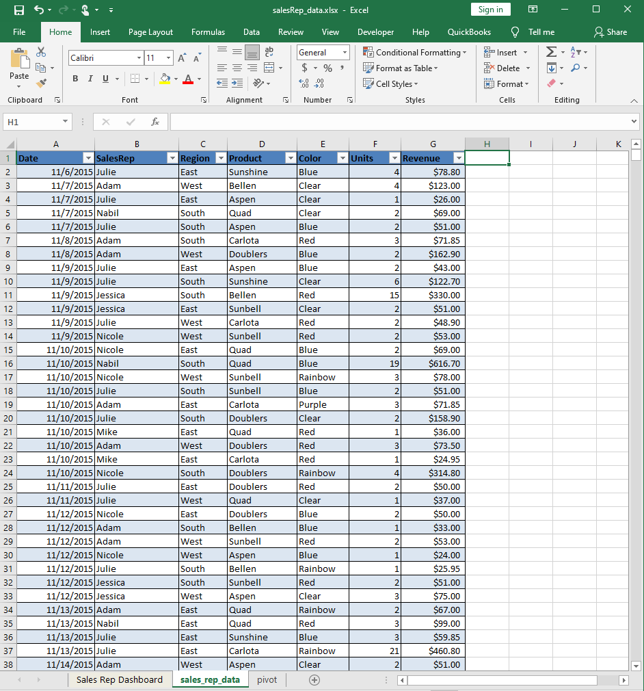
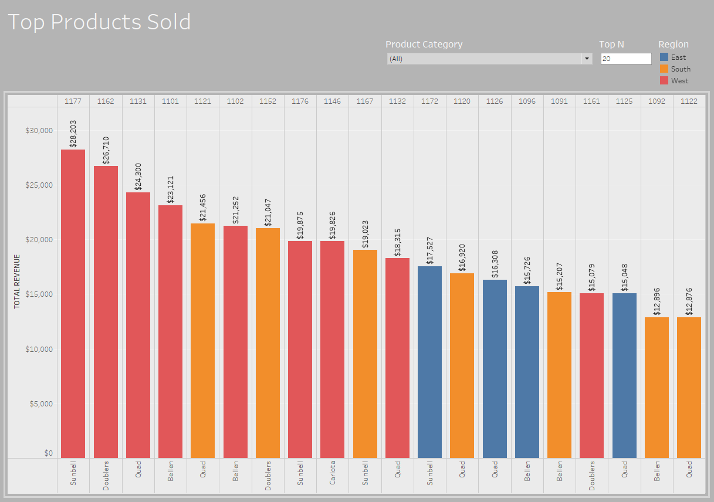
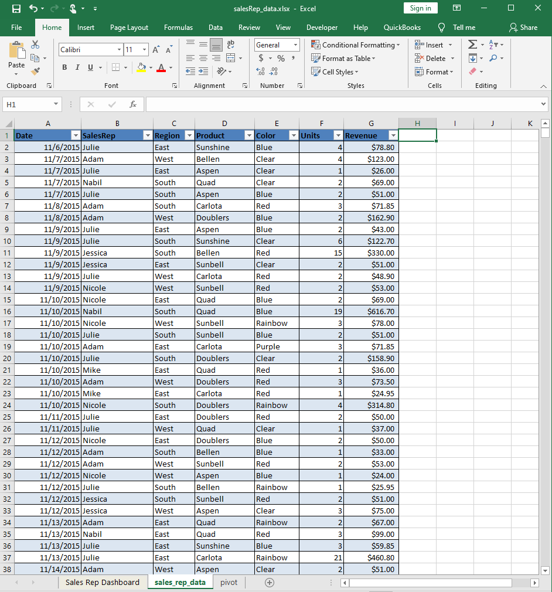
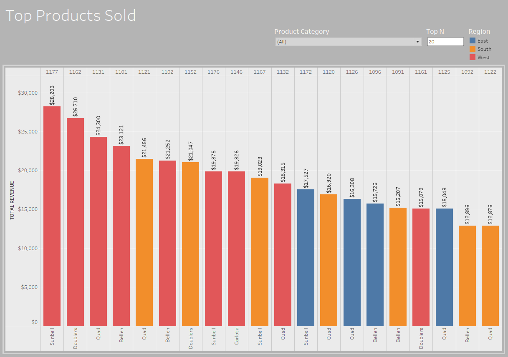

OVERVIEW:
- This report will investigate a sales representative and revenue dataset.
- The focus is on revenue generated, time periods of productivity, and most popular products sold.
- Tools Used: Excel, MySQL Server, Tableau
- Dataset: sales csv file with ~10,000 records
 



Business Request & User Stories
The business request for this data analysis is a sales report for sales manager. The following user stories are defined to ensure the sales performance is meeting the business requirements.
| # | As a (role) | I want (request/demand) | So that I (user value) | Acceptance Criteria |
|---|---|---|---|---|
| 1 | Regional Manager | The total and % revenue per region. | Can get revenue relationship between regions. | Detailed Sales Dashboard |
| 2 | Sales Manager | The total revenue per year. | Can get yearly sales progress. | Detailed Sales Dashboard |
| 3 | Regional Manager | Each Sales Rep's total revenues per region. | Find the best Sales Reps for each region. | Sales Representative Dashboard |
| 4 | Regional Manager | To know which Sales Reps with most (%) revenue for each region. | Find Reps with highest sales for their regions. | Sales Representative Dashboard |
| 5 | Sales Representative | To know the highest quarterly earnings. | Get an quick overview of sales revenue. | General Sales Analysis Dashboard |
| 6 | Sales Manager | The revenue per month for each year. | Can get the monthly sales trends. | General Sales Analysis Dashboard |
| 7 | Sales Representative | The top 3 products sold. | Can list the top selling products and their Sales Reps. | Top Products and SalesRep Sales by Product Dashboards |
Data Cleansing & Transformation (SQL)
To create the necessary data model for doing the analysis and fulfilling the business needs defined in the user stories and the following tables were extracted using SQL.
One data source (sales budgets) were provided in Excel csv format and were connected in the data model in a later step in the process.
Below are the SQL statements for cleaning and transforming the necessary data.
Product Sales SQL View:
CREATE VIEW product_sales AS
SELECT s.Date AS Date,
s.Product_ID AS Prod_ID,
p.Product AS Name,
p.Color AS Color,
p.Region AS Region,
s.Units AS Units,
p.Unit_Price AS Price,
SUM(s.Units * p.Unit_Price) AS Revenue
FROM
products AS p
INNER JOIN sales AS s
ON p.ID = s.Product_ID
GROUP BY
s.Product_ID
ORDER BY
s.Date DESC;
Region Sales SQL View:
CREATE VIEW region_sales AS
SELECT
p.Region AS Region,
SUM(s.Units * p.Unit_Price) AS Revenue
FROM
products AS p
INNER JOIN sales AS s
ON p.ID = s.Product_ID
GROUP BY
Region;
Total Sales SQL View:
CREATE VIEW total_sales AS
SELECT s.Date AS Date,
s.Product_ID AS Prod_ID,
p.Product AS Name,
s.Units AS Units,
p.Unit_Price AS Price,
SUM(s.Units * p.Unit_Price) AS Revenue
FROM
products AS p
INNER JOIN sales AS s
ON p.ID = s.Product_ID;
Detail Sales SQL View:
CREATE VIEW detail_sales AS
SELECT
Date,
YEAR(s.DATE) AS Year,
MONTH(s.Date) AS Month,
DAY(s.Date) AS Day,
DAYNAME(s.Date) AS Weekday,
s.Product_ID AS Prod_ID,
p.Product AS Name,
p.Color AS Color,
p.Region AS Region,
reps.SalesRep AS SalesRep,
s.Units AS Units,
p.Unit_Price AS Price,
(s.Units * p.Unit_Price) AS Extd_Price
FROM
products AS p
INNER JOIN sales AS s
ON p.ID = s.Product_ID
LEFT JOIN salesreps AS reps
ON s.SalesRep_ID = reps.ID;
What is the total and % revenue per region?:
SELECT
Region,
Revenue,
TRUNCATE((Revenue/(SELECT Revenue FROM total_sales))* 100, 1) AS Prcnt_Rev
FROM
region_sales;
What is the total revenue per year?:
SELECT
YEAR(s.Date) AS Year,
SUM(s.Units * p.Unit_Price) AS Total_Revenue
FROM
products AS p
INNER JOIN sales AS s
ON p.ID = s.Product_ID
GROUP BY
Year
ORDER BY
Total_Revenue DESC;
For each Sales Rep, what are their total revenues per region?:
SELECT
SalesRep,
Region,
SUM(Extd_Price) AS Revenue
FROM
detail_sales
GROUP BY
SalesRep,
Region
ORDER BY
SalesRep;
Which Sales Reps have the largest % of revenue for each of the regions?:
SELECT
SalesRep,
Region,
SUM(Extd_Price) AS Total_Revenue,
CASE
WHEN Region = 'East'
THEN (SUM(Extd_Price) / (SELECT Revenue FROM region_sales WHERE Region = 'South'))
WHEN Region = 'South'
THEN (SUM(Extd_Price) / (SELECT Revenue FROM region_sales WHERE Region = 'South'))
WHEN Region = 'West'
THEN (SUM(Extd_Price) / (SELECT Revenue FROM region_sales WHERE Region = 'West'))
END AS Prcnt_Revenue
FROM
detail_sales
GROUP BY
Region,
SalesRep
ORDER BY
Prcnt_Revenue DESC;
Which quarter has the highest earnings? :
SELECT
QUARTER(Date) AS QTR,
SUM(Extd_Price) AS QTR_Revenue
FROM
detail_sales
GROUP BY
QTR
ORDER BY
QTR_Revenue DESC;
What is the revenue per month for each year?:
SELECT
Year,
MONTHNAME(Date) AS Month,
SUM(Extd_Price) AS Rev_Per_Month
FROM
detail_sales
GROUP BY
Year, Month
ORDER BY
Year,
Rev_Per_Month DESC;
What are the top 3 products sold?:
SELECT
Prod_ID,
Name,
Color,
SUM(Extd_Price) AS Total_Rev
FROM
detail_sales
GROUP BY
Prod_ID
ORDER BY
Total_Rev DESC
LIMIT 3;
Data Model
Below is a screenshot of the data model after cleansing and table preparation. The ERD was generated using PowerPoint.
This data model shows the table relationships and the generated SQL views.
One data source (sales budgets) were provided in Excel csv format and were connected in the data model in a later step in the process.
Below are the SQL statements for cleaning and transforming the necessary data.
Sales Analysis Dashboard
The finished sales analysis dashboard with one page works as a dashboard and overview, with two other pages focused on combining tables for necessary details and visualizations to show sales over time, per customers and per products.
Click the picture to open the dashboard and try it out.
Below are the SQL statements for cleaning and transforming the necessary data.